Executive Summary
- 2026 화웨이 봄 전장면(全场景) 신제품 발표회는 스마트폰 · 웨어러블 · 태블릿 · 모니터 · 자동차를 아우르는 대규모 멀티 카테고리 행사
- Mate80 Pro Max 풍치판(风驰版)이 주력 신제품 — 업계 최초 내장 냉각 팬(仿生羽翼涡扇)을 탑재하여 Mate70 Pro+ 대비 전체 성능 45%↑. 단, 초망원 렌즈 포지션을 팬 모듈로 대체하여 카메라 스펙은 일부 축소
- 카메라 관련 핵심 메시지: 이번 발표회에서 스마트폰 카메라 신기술은 전면에 부각되지 않음. Mate80 Pro Max 풍치판은 XMAGE 트리플 카메라를 유지하나, 초망원 렌즈를 팬 냉각 모듈로 교체한 것이 핵심 트레이드오프
- mid-range 라인업 畅享 90 Pro Max 발표 — 8,500mAh 대용량 배터리, 全域灵睿节电 절전 기술(카메라 저전력 알고리즘 포함), 기린 8000, 와이파이 7, 5A 충전
- 웨어러블: Watch Ultimate Design 2 NEW COLOR "프레임 녹(框也绿)" + Watch GT-12(전문 러닝워치) + Band 11 시리즈 발표
- 태블릿: MatePad Mini 열독판 완영자 신색상 + MatePad Pro 12.2 신색상 출시
- 디스플레이: 화웨이 역대 최대 27인치 OLED 모니터(有机替) 출시
- 자동차: AITO 问界 M7 야자(夜紫) 신색상 + 问界 M8 전향 입체 융합 감지 시스템(38개 전체 센서) 공개
- 화웨이 영상대회(华为影像大赛) 10주년 기념 발표 — 2017년 이후 170개국 이상 참가, 누적 600만 건 이상 투고
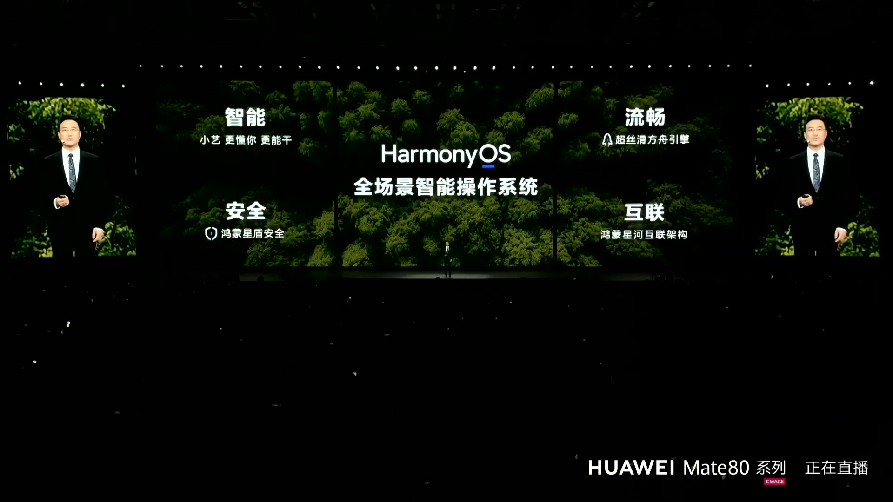
[01:00] 화웨이 2026 봄 전장면 신제품 발표회 — 창사 개최. 허강(何刚) CEO 등장
📷 카메라 관련 핵심 내용
⚠️ 주목: 이번 발표회는 카메라 성능 강화가 아닌 성능(냉각) 강화에 집중된 행사입니다. 주력 폰 Mate80 Pro Max 풍치판은 초망원 렌즈(超长焦) 자리에 냉각 팬 모듈을 배치하여 카메라 구성이 기존 Mate80 Pro Max 대비 축소되었습니다.
Mate80 Pro Max 풍치판 — XMAGE 카메라 구성
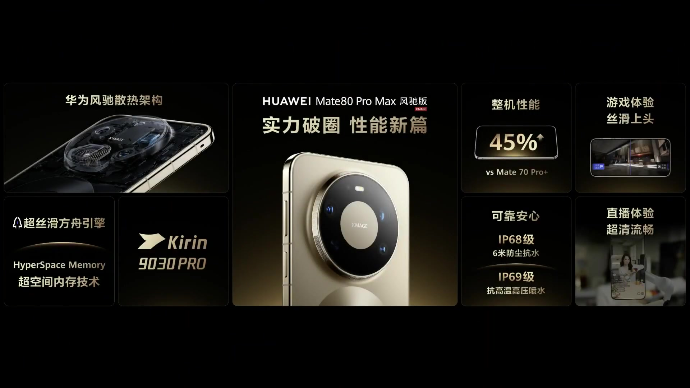
[09:33] 풍치판 스펙 슬라이드 — XMAGE 브랜드 카메라 모듈이 보이며, 기린 9030 PRO·HyperSpace Memory·IP68+IP69 방수가 강조
🔄 초망원 → 냉각 팬 교체: 카메라 트레이드오프
풍치판은 Mate80 Pro Max 기본 모델의 초장초점(超长焦) 렌즈 포지션을 풍치(风驰) 산열 모듈로 대체하였습니다. 발표에서 직접 언급:
- "Mate80 Pro Max를 기반으로 초장초점 렌즈 하나를 팬 냉각 모듈로 교체하여 극한 성능을 구현" (03:59 시점)
- 카메라 모듈에는 여전히 XMAGE 브랜드가 적용되며, 기존 주 카메라 + 광각 카메라는 유지
- 초장초점 렌즈가 빠진 자리에 1,200개 이상의 레이저 정밀 조각 마이크로홀(激光精雕微孔)로 구성된 팬 출풍구 배치
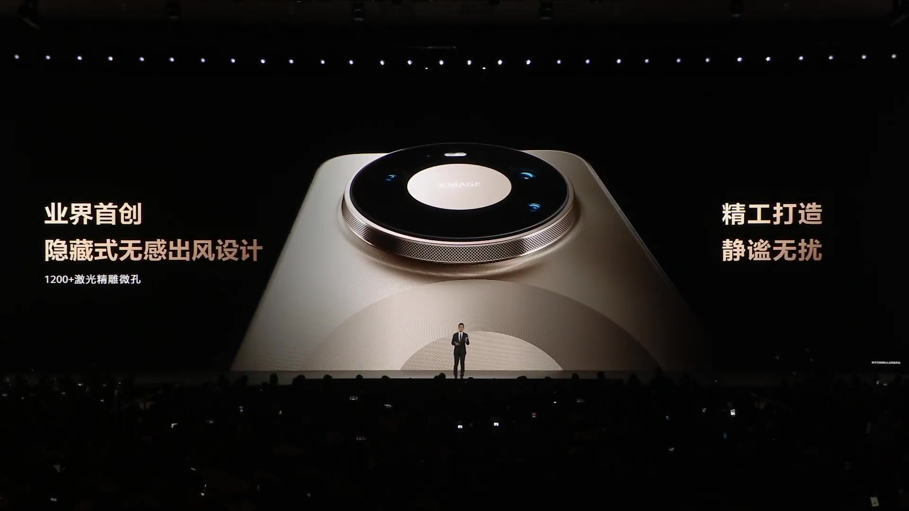
[04:30] 업계 최초 은닉형 무감 출풍 설계 — 1,200개 이상 레이저 정밀 조각 마이크로홀
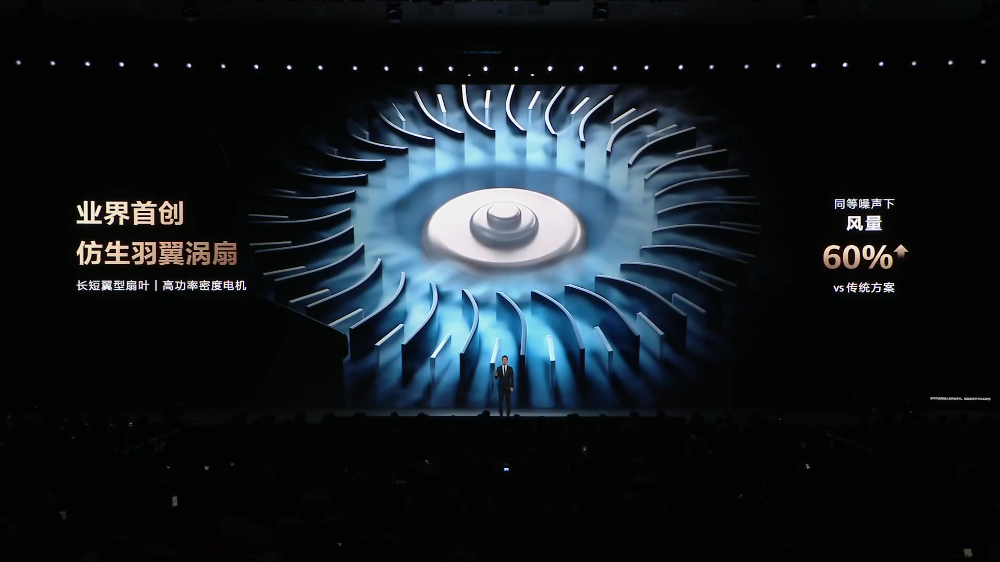
[05:15] 업계 최초 仿生羽翼涡扇(바이오닉 익형 와류 팬) — 동일 소음 대비 풍량 60%↑
nova(畅享) 시리즈 — 카메라 저전력 알고리즘
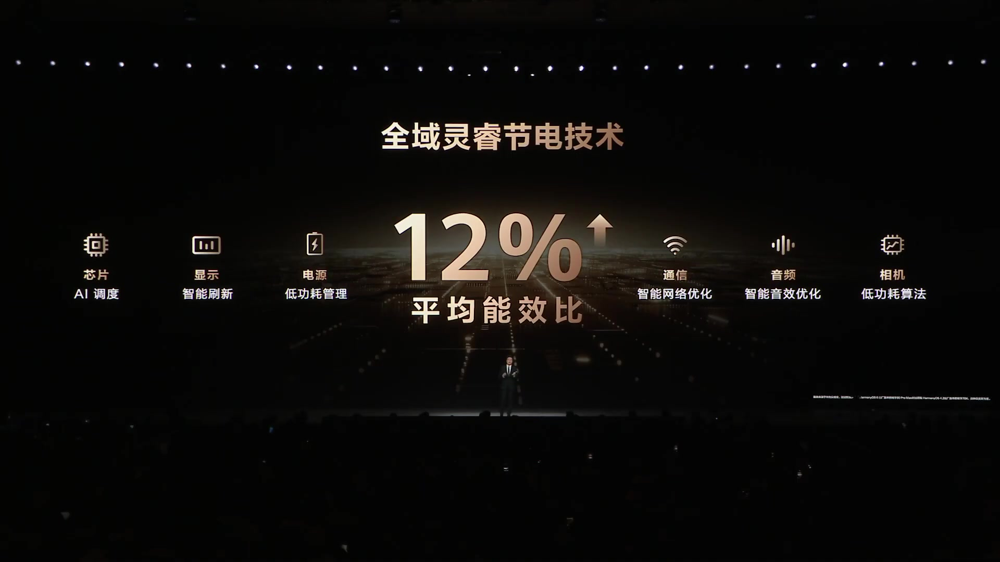
[12:50] 全域灵睿节电技术 — 芯片·显示·电源·通信·音频·相机 6개 영역 통합 최적화, 평균 에너지 효율비 12%↑. 상기 슬라이드에 "相机 低功耗算法(카메라 저전력 알고리즘)"이 명시
📸 相机 低功耗算法 (카메라 저전력 알고리즘)
畅享 90 Pro Max의 全域灵睿节电(전역 영민 절전) 기술은 카메라 전용 저전력 알고리즘을 포함합니다. 칩·디스플레이·전원·통신·음성·카메라 6개 전영역에서 평균 에너지 효율비를 12% 향상시켜, 동일 성능 대비 소비전력을 낮추는 방식입니다. 카메라 촬영 중 배터리 소모를 최소화하는 구체적 알고리즘 수치는 별도로 공개되지 않았습니다.
화웨이 영상대회(华为影像大赛) 10주년
2017년 시작된 화웨이 영상대회가 10회를 맞이했습니다. 누적 170개국 이상 참가, 600만 건 이상 투고로 모바일 분야 세계 최대 규모의 영상 대회 중 하나로 성장하였으며, 이번 발표회에서 제10회 대회의 공식 개막이 선언되었습니다.
① HUAWEI Mate80 Pro Max 风驰版 (풍치판)
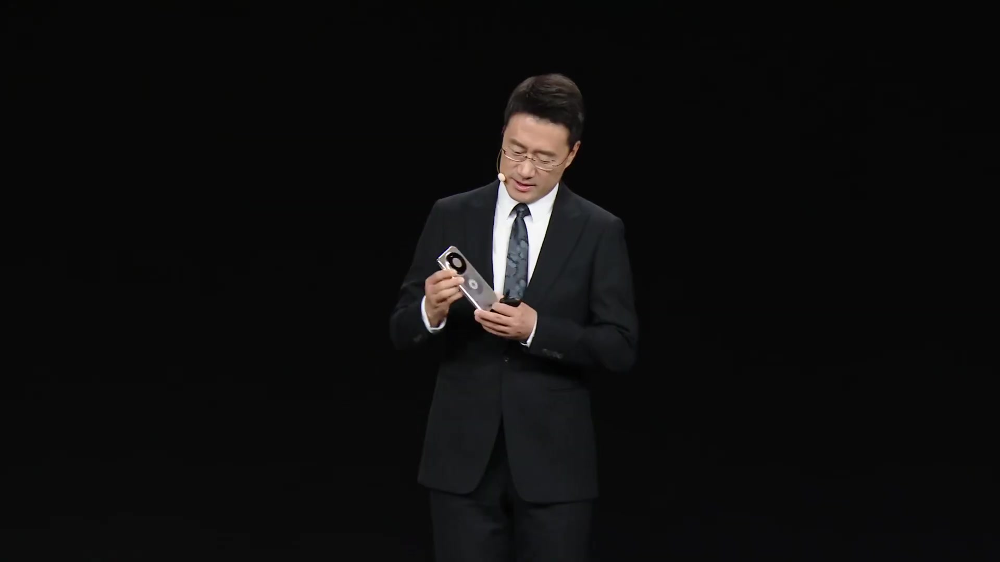
[03:13] Mate80 Pro Max 风驰版 공식 공개 — "실력 파권(实力破圈) 성능 신편(性能新篇)"
핵심 메시지: "풍치판은 극한 성능을 위해 태어났다(为极致性能而生)" — 기존 Mate80 Pro Max에 주동 냉각 기술을 탑재, 초장초점 렌즈 자리에 팬 냉각 모듈을 적용하여 전체 성능을 45% 끌어올림
주요 사양
| 항목 | 사양 |
|---|
| 칩셋 | Kirin 9030 PRO |
| OS | HarmonyOS 6 (鸿蒙 6) |
| 냉각 시스템 | 业界首创 仿生羽翼涡扇(바이오닉 익형 와류 팬) — 同噪声下 풍량 60%↑ |
| 散热 효율 | 超导热温流智能分区 → 방열 효율 30%↑ |
| 출풍 디자인 | 隐藏式无感出风 — 1,200개 이상 레이저 정밀 조각 마이크로홀 |
| 메모리 기술 | HyperSpace Memory — 16GB RAM으로 20GB 경험 구현 (메모리 압축률 69%↑, 백그라운드 앱 보존율 100%↑) |
| 전체 성능 | Mate70 Pro+ 대비 45%↑ |
| 방수·방진 | IP68 (6m) + IP69 (고온 고압 분사) |
| 카메라 | XMAGE 트리플 카메라 (초장초점 렌즈 제외, 팬 모듈로 대체) |
| 색상 | 极昼金(극주금) · 极夜黑(극야흑) |
| 메모리/저장 | 16GB+512GB · 16GB+1TB |
| 출시일 | 2026년 3월 27일 10:08 |
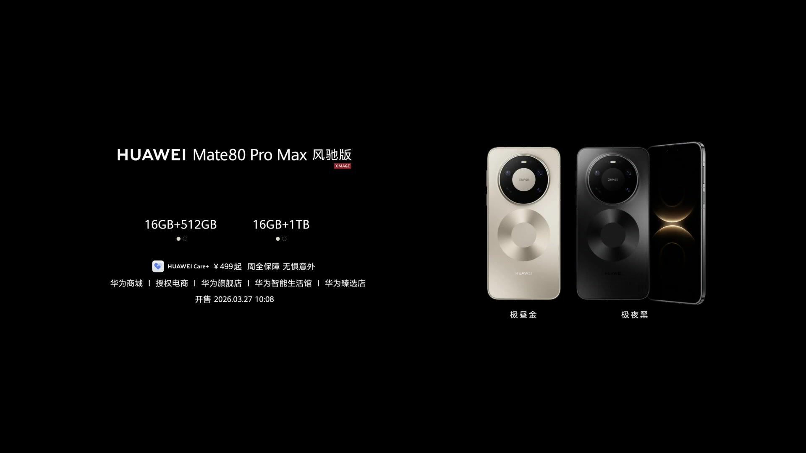
[10:02] 극주금(极昼金) · 극야흑(极夜黑) 두 가지 색상, 16GB+512GB / 16GB+1TB 두 가지 구성
Mate80 Pro Max 风驰版 가격
2026.03.27 10:08 정식 판매 | HUAWEI Care+ 보호 서비스 ¥499~
② 华为畅享 시리즈 (nova/Enjoy 라인)
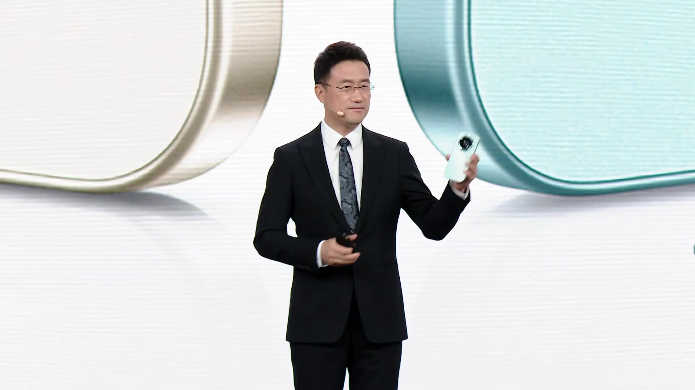
[10:52] 华为畅享 90 Pro Max — "距禁常续航 流畅新标杆(초장기 배터리 유창함의 새 기준)"
畅享 90 Pro Max
| 항목 | 사양 |
|---|
| 칩셋 | Kirin 8000 |
| OS | HarmonyOS 6 |
| 배터리 | 8,500mAh 巨鲸(거래) 대용량 배터리 (华为 스마트폰 역대 최대) |
| 절전 기술 | 全域灵睿节电技术 — 평균 에너지 효율비 12%↑ (카메라 저전력 알고리즘 포함) |
| 성능 | 超丝滑方舟引擎 — 앱 실행 유창도 64%↑, 화면 전환 35%↑, 콘텐츠 로딩 85%↑ |
| 충전 | 5A 고속 충전 |
| 통신 | WiFi 7, 쌍성 GPS + 3성 북두, 5G |
| 내구성 | 双武新 초내충격 인증 (CQC + 스위스 STS 이중 인증) |
| 색상 | 药金黑 · 陈西金 · 飞天青 · 血玉白 4가지 |
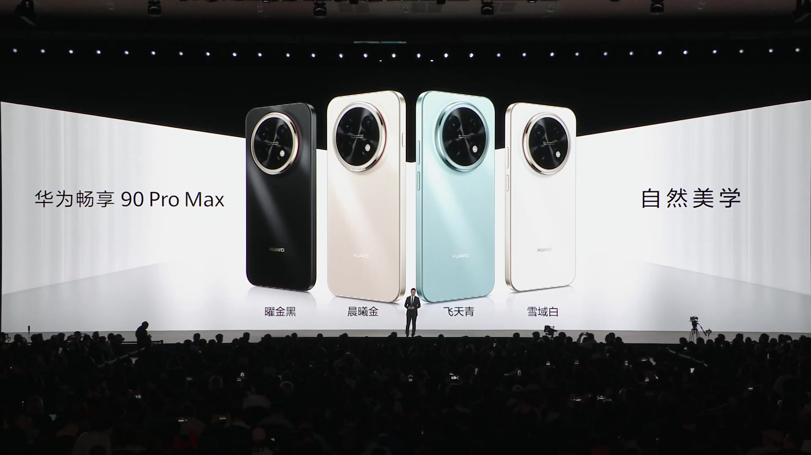
[11:13] 畅享 90 Pro Max 4가지 색상 — 药金黑·陈西金·飞天青·血玉白
畅享 90 Plus & 畅享零
| 모델 | 주요 특징 | 가격 |
|---|
| 畅享 90 Plus | Kirin 8000 · HarmonyOS 6 · 성능 60%↑ · WiFi 7 · 5A 충전 · 新公黑·新海蓝·雨沙白 3색 | 공개 예정 |
| 畅享零 (Pro) | Kirin 7050 · HarmonyOS 6 · 安全防护 · 1,690원~ | ¥1,690~ |
| 畅享零 Plus | Kirin 7050 · HarmonyOS 6 | ¥1,490~ |
| 畅享零 | Kirin 7050 · HarmonyOS 6 | ¥1,290~ |
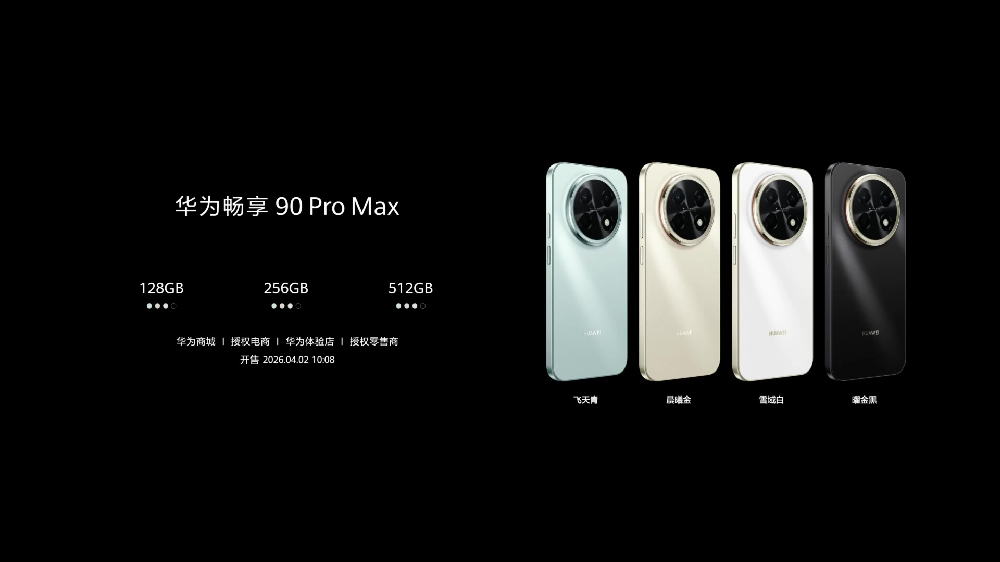
[20:32] 畅享零 시리즈 가격 공개 — ¥1,290 ~ ¥1,690
③ 웨어러블 신제품
Watch Ultimate Design 2 — 框也绿 (프레임 녹색) 한정판
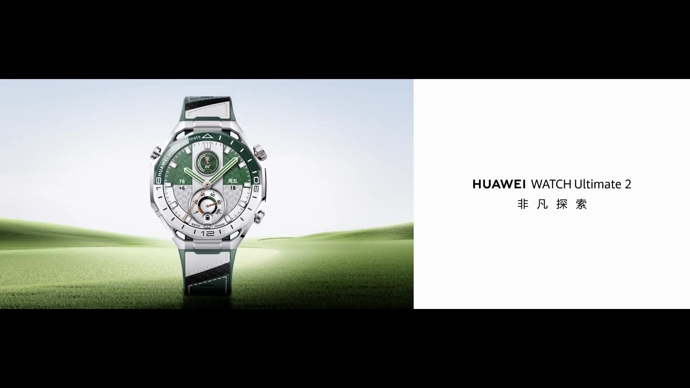
[24:28] Watch Ultimate Design 2 框也绿 — 비범한 탐험(非凡探索) 컨셉
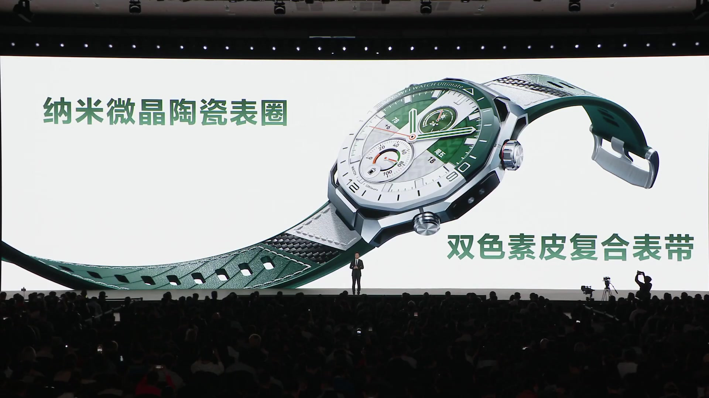
[24:50] 녹백 배색 나노 세라믹 베젤 + 소피 복합 스트랩 3종 구성
- 나노 세라믹 베젤 (녹백 배색) + 素皮 복합 스트랩
- 프리미엄 스트랩 · 소피 스트랩 · 스포츠 스트랩 3종 포함
- 고프 전용 기능 대폭 업그레이드 (스윙 각도·궤도 평면 검출 등)
- 양부로(两步路) 협업 — 1천 개 이상 정품 탐험 루트 제공 (4월 말 업데이트)
- 수심 측정 내장 — Garmin 연동, 다이빙 데이터 자동 동기화
- 가격: ¥7,000 | 2026.04.10 정식 출시
HUAWEI Watch GT-12 (러닝 전문 스마트워치)
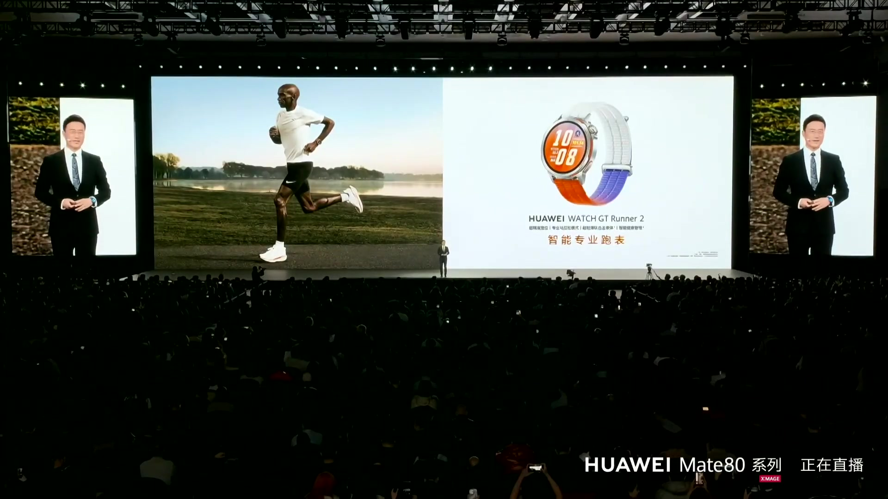
[30:12] HUAWEI Watch GT-12 디자인
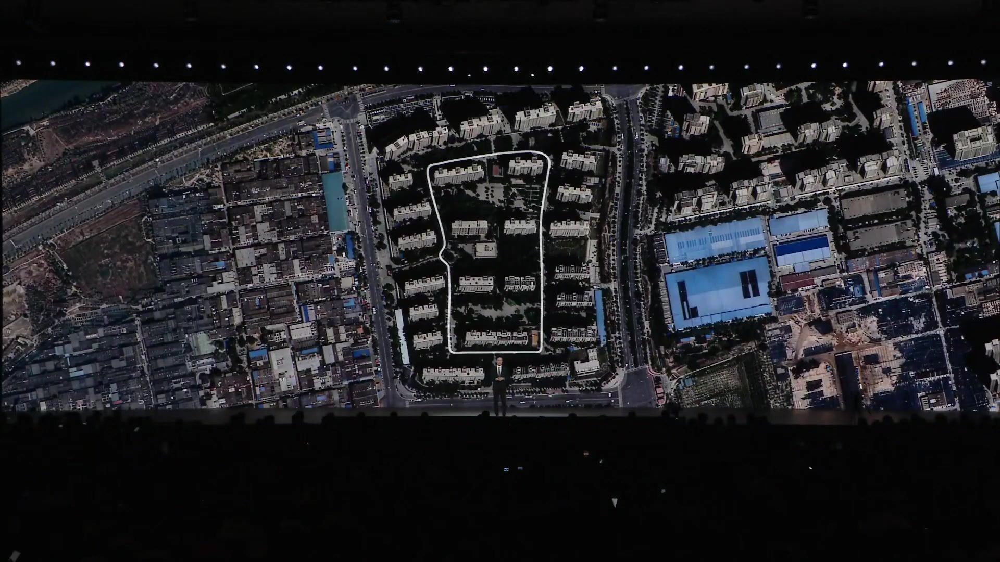
[33:10] GT-12 러닝 전문 기능 상세
- 화웨이 손목 기기 역대 가장 정밀한 위치 측정 능력
- 전문 러닝 퍼포먼스 분석 (VO2Max, 러닝 보행 궤적 등)
- HarmonyOS 6 기반 심리스 기기 연동
- 색상: 破晓橙石光蓝·极影黑 3종
- 가격: ¥2,588 | 예약 접수 중, 2026.04.10 정식 출시
华为手环 11 시리즈
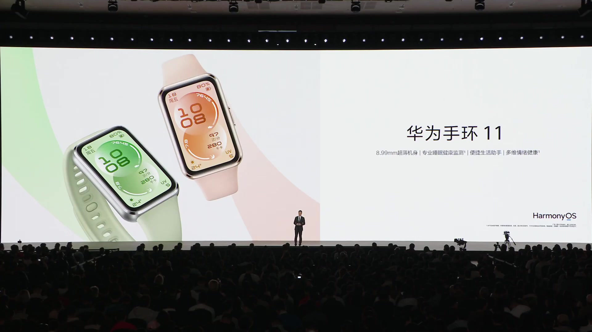
[46:43] 华为手环 11 시리즈 라인업
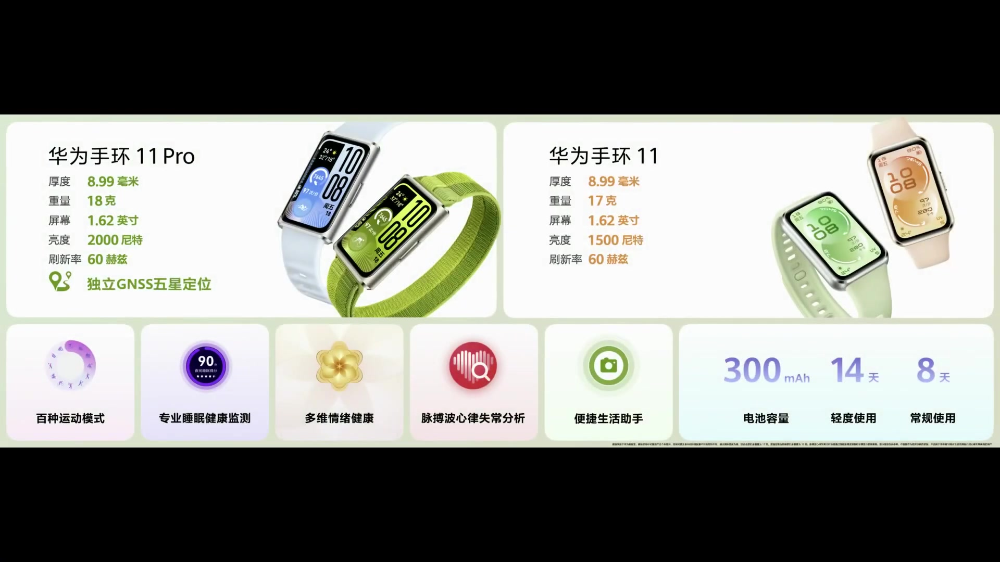
[47:10] 手环 11 — 1.62인치 대화면, 밝기 2,000nit, 상반신 비율 17%↑
| 모델 | 가격 |
|---|
| 手环 11 Pro | ¥389~ |
| 手环 11 | ¥269~ |
④ 태블릿 & 디스플레이 신제품
MatePad Mini 열독판 — 완영자(万营子) 신색상
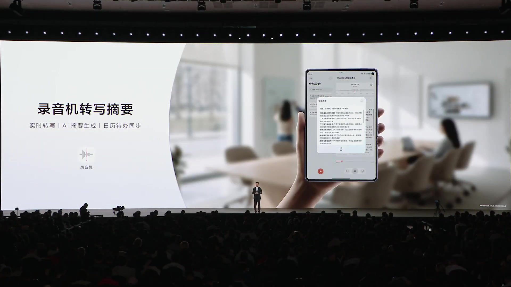
[49:00] MatePad Mini 열독판 완영자 색상 공개
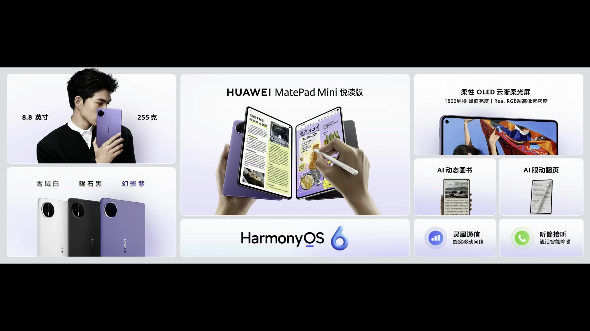
[49:15] 8.8인치 플렉시블 OLED · 255g · eSIM 지원
- 8.8인치 플렉시블 OLED 전면 화면 (90% 화면 점유율, 1,800nit)
- 흑백 E잉크 모드 — 블루라이트 저감 열독 모드
- AI 눈동자 추적 자동 스크롤 기능
- HarmonyOS 6 + 음성 녹취 자동 변환 + 미팅 요약
- 가격: ¥3,200~ (3월 28일 정식 출시)
MatePad Pro 12.2 — 완영자 신색상
- 2,000nit 밝기 듀얼레이어 OLED 전면 화면
- HarmonyOS 6 + 풍부한 鸿蒙 앱 생태계
- 가격: ¥4,400~ (3월 28일 정식 출시)
华为 有机替 OLED 모니터 — 화웨이 첫 OLED 디스플레이
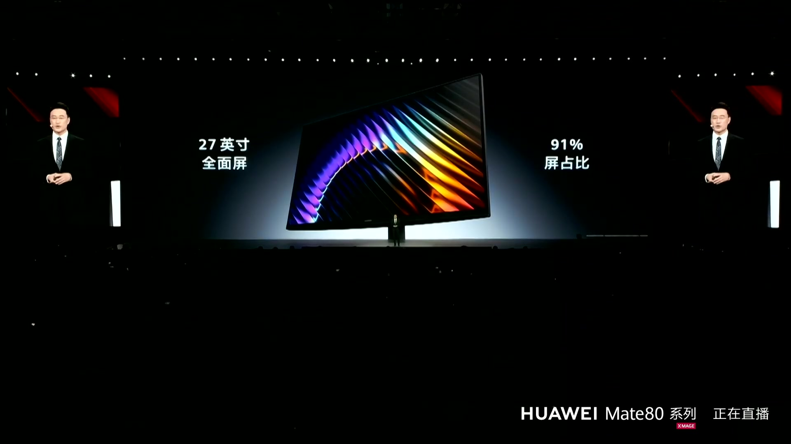
[51:20] 화웨이 첫 OLED 27인치 모니터 — 91% 화면 점유율 전면 디자인
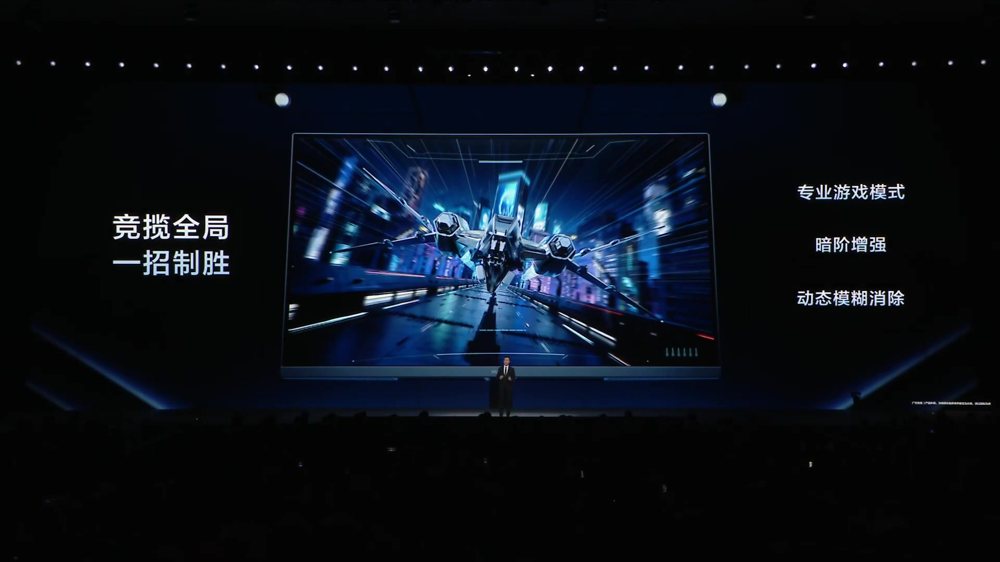
[52:40] 유리광막(柔光屏) — 6층 초박막 광학 필름, 환경광 간섭 99% 차단
- 27인치 OLED 전면 화면 (화면 점유율 91%)
- 4K 해상도 + P3 95% 색역
- 随意温教准(색온 자동 보정) + 원색 재현
- 柔光屏(유리광막) — 6층 초박막 광학 필름, 환경 반사광 99% 제거
- 전문 게이밍 모드 + 동적 블러 제거 기술 + 디테일 강화 기술
- 듀얼 디스플레이 모드 (4K 초정밀 / 게이밍 전환)
⑤ 자동차 — AITO 问界 & LUXEED
AITO 问界 M7 — 夜紫(야자) 신색상
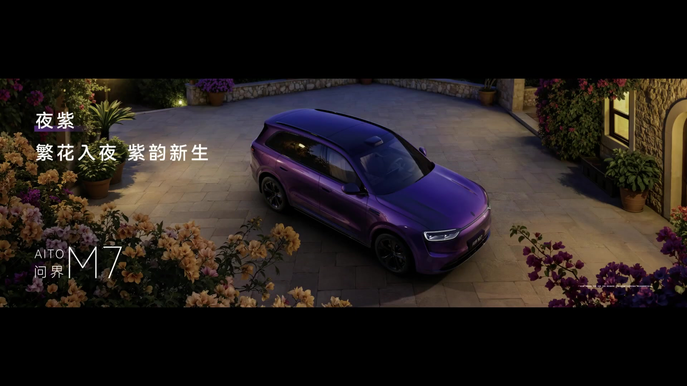
[68:00] AITO 问界 M7 야자(夜紫) 신색상 — "繁花入夜 紫韵新生(꽃이 밤으로 들어가 자색의 운치로 거듭나다)"
问界 M8 — 全向立体融合感知系统
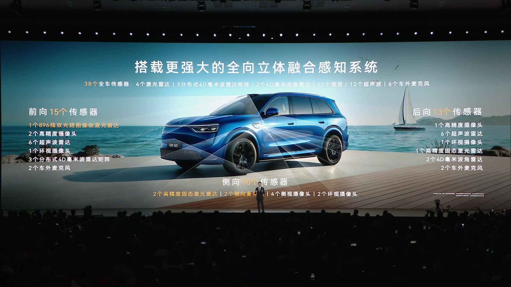
[69:45] 问界 M8 전향 입체 융합 감지 시스템 — 38개 전체 차량 센서 공개
搭载更强大的全向立体融合感知系统: 총 38개 전체 차량 센서
| 방향 | 센서 수 | 상세 구성 |
|---|
| 전향(前向) | 15개 | 896선 이중 광로 이미지급 라이다 1개 · 고정밀 카메라 2개 · 초음파 레이더 6개 · 환시 카메라 1개 · 분산형 4D 밀리파 레이다 행렬 3개 · 차외 마이크 2개 |
| 후향(后向) | 13개 | 고정밀 카메라 1개 · 초음파 레이더 6개 · 환시 카메라 1개 · 고정밀 고체 라이다 1개 · 4D 밀리파 코너 레이다 2개 · 차외 마이크 2개 |
| 측향(侧向) | 10개 | 고정밀 고체 라이다 2개 · 측향 마이크 2개 · 측시 카메라 4개 · 환시 카메라 2개 |
| 전체 센서 구성 | 4 라이다 · 분산형 4D 밀리파 레이다 행렬 3개 · 4D 코너 레이다 2개 · 시각 11개 · 초음파 12개 · 차외 마이크 6개 |
전향 주요 센서인 896선 이중 광로 이미지급 라이다(激光雷达)는 업계 최고 수준의 해상도와 장거리 탐지를 지원하며, M8의 자율주행 보조 기능 고도화의 핵심입니다.
⑥ 전체 제품 라인업 요약
Mate80 Pro Max 风驰版
¥8,400~
3.27 출시
畅享 90 Pro Max
공개 예정
기린 8000 · 8,500mAh
畅享零 시리즈
¥1,290~
3종 (Zero/Plus/Pro)
Watch Ultimate 2 框也绿
¥7,000
4.10 출시
Watch GT-12
¥2,588
4.10 출시
MatePad Mini 열독판 완영자
¥3,200~
3.28 출시
MatePad Pro 12.2 완영자
¥4,400~
3.28 출시
有机替 OLED 모니터 27"
공개 예정
화웨이 첫 OLED 디스플레이
📊 카메라 경쟁 포지션 분석
분석 요약: 이번 발표회는 화웨이의 "성능 파권(实力破圈)" 선언에 방점이 찍혀 있습니다. 카메라보다 냉각·성능 기술에 초점을 맞춘 전략적 선택으로, XMAGE 카메라 기술 자체는 Mate80 Pro Max 기본 모델 수준을 유지하되, 초망원 렌즈를 과감히 제거함으로써 성능 극대화 트레이드오프를 채택했습니다.
삼성·샤오미와의 카메라 방향성 비교
| 브랜드 | 최근 전략 | 이번 시사점 |
|---|
| 화웨이 (이번 행사) | 성능·냉각 최우선, 초망원 렌즈 제거 | 카메라 기술 고도화 보다 생태계·성능 강조로 선회 |
| Xiaomi 17 Ultra | 1인치 주 센서, 200MP 가변 광학 줌, 라이카 APO 인증 | 카메라 단독 최강자 포지션 공격적 선점 |
| HONOR Magic V6 | 폴더블 + 대형 XMAGE 수준 트리플 카메라 | 폴더블에서도 카메라 경쟁력 강화 |
결론: 화웨이는 이번 봄 행사에서 카메라 혁신보다 HarmonyOS 생태계 확장 + 극한 성능(냉각)을 핵심 가치로 포지셔닝. 카메라 플래그십 업데이트는 하반기(Mate 시리즈 정규 발표회)로 예상됩니다. 카메라 분야 경쟁사 추격 압박은 여전하며, 특히 Xiaomi 17 Ultra의 가변 광학 줌이 시장의 새 기준을 제시한 상황에서 화웨이의 대응이 주목됩니다.